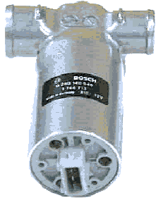

главная → ЭСУД ГАЗ
Регулятор дополнительного воздуха ZWD-5 0280140545 (BOSCH)
Назначение электромеханизма. Принцип действия
- Регулятор дополнительного воздуха (РДВ), называемый также регулятором холостого хода, предназначен для управления дополнительным байпасным каналом воздуха, выполненным в обход дроссельной заслонки.
- РДВ позволяет выполнять следующие основные функции:
- автоматический запуск и прогрев двигателя на холостом ходу;
- стабилизация минимальных оборотов холостого хода;
- управление цикловым наполнением воздуха на частичных нагрузках;
- демпфирование воздушного потока при резком открытии и закрытии дроссельной заслонки.
- РДВ представляет собой двухобмоточный поворотный соленоид со щелевым проходным отверстием, сечение которого изменяется по программе блока управления.
- Электропитание электромагнитных обмоток регулятора осуществляется от бортовой сети через главное реле, а включение обмоток производится путем замыкания их на массу через силовые каналы блока управления.
- При взаимодействии постоянного магнитного поля ротора с переменным магнитным полем статора, которое формируется импульсами управления изменяемой скважности с частотой 125 Гц, ротор вместе с клапаном поворачивается на заданный угол и изменяет проходное сечение байпасного канала, через который всасываемый воздух попадает в задроссельное пространство двигателя, минуя дросельную заслонку.
- Степень открытия РДВ изменяется от полного открытия (240 шагов) на запуске двигателя до полного закрытия в режиме ЭПХХ, на холостом ходу регулятор открыт примерно на 85...100 шагов (35...45%) для прогретого двигателя.
Конструкция электромеханизма

- Конструктивно электромеханизм состоит из следующих элементов:
- цилиндрический корпус с впускным и повернутым на 90 градусов выпускным штуцерами, внутри которого размещены двухобмоточный электродвигатель постоянного тока и подпружиненный клапан в виде сектора;
- трехконтактная вилка соединителя, опрессованная в корпусе.
- Направление воздушного потока указано стрелкой.
Параметры электромеханизма
- Максимальная производительность: 60кГ/ч.
- Активное сопротивление обмоток: 12±1 Ом.
- Индуктивность обмоток на частоте 100 Гц: 12±2мГн.
- Напряжение электропитания: 6...18В.
- Частота сигналов управления: 125Гц.
- Скважность сигналов управления: 0...100%
Установка и монтаж электромеханизма на автомобиле
- Регулятор дополнительного воздуха крепится к ресиверу двигателя через резинометаллический держатель или металлическим хомутом.
- К выходному штуцеру регулятора подводится резиновый шланг от ресивера, а ко входному штуцеру—резиновый шланг от бокового штуцера дроссельного устройства, все соединения шлангов уплотняются хомутами.
- Подключение регулятора к жгуту проводов производится посредством трехконтактной розетки с защелкой.
Аналоги электромеханизма
- Регулятор дополнительного воздуха ZWD-5 0280140545 (BOSCH) предназначен для установки, в основном, на автомобильные двигатели ЗМЗ-4062.10, ЗМЗ-409.10 и ЗМЗ-405.10.
- Аналогами регулятора являются:
- РХХ-60 9Е.573.000 (РЗП, г. Раменское);
- РХХ-60 (АО «ПЕГАС», г. Кастрома).
Внешние проявления неисправностей цепей электромеханизма

- Лампа неисправности горит после включения зажигания. Самодиагностика блока фиксирует коды неисправности 161...166.
- Проверьте исправность цепей регулятора дополнительного воздуха 37е, 4, 26.
- Двигатель запускается и глохнет или запускается только при частично нажатой педали акселератора. Лампа неисправности не горит (нет неисправностей системы).
- Проверьте состояние байпасного канала и, при необходимости, промойте и очистите его от грязи.
- Проверьте и, при необходимости, замените регулятор дополнительного воздуха.
- Повышенные обороты холостого хода горячего двигателя. Лампа неисправности не горит (нет неисправностей системы).
- Проверьте, возможно затвор регулятора закоксован, промойте регулятор в керосине и просушите.
- Проверьте, если двигатель запускается при пережатом шланге регулятора—имеет место просос воздуха через неплотно прикрытый дроссель, отрегулируйте привод и заслоку дросселя на полное закрытие.
|